ALTIBASE와 JEUS를 연동하여 사용하기 위한 설정 방법에 대해서 설명한다.
JDBC 드라이버
JDBC란 자바 응용프로그램에서 데이터베이스에 연결하여 여러 SQL을 실행할 수 있도록 제공하는 표준 인터페이스를 말한다.
이러한 JDBC 드라이버는 각 데이터베이스 벤더사가 제공하고 있으며, ALTIBASE에서는 Altibase.jar 파일로 제공하고 있다. 이 JDBC 드라이버는 $ALTIBASE_HOME/lib 디렉토리 안에 존재한다.
ALTIBASE 5 버전부터는 $ALTIBASE_HOME/lib 디렉토리에 Altibase.jar와 Altibase5.jar 파일이 존재하는데, Altibase.jar는 일반 ALTIBASE JDBC 드라이버 파일이며, Altibase5.jar는 ALTIBASE 5 버전과 그 이하의 버전을 함께 사용하고 싶을 때 사용하는 파일이다. 따라서 하나 이상의 ALTIBASE 와 연동하기를 원한다면 일반적으로 Altibase5.jar 파일을 사용한다.
JDBC 드라이버 설정
ALTIBASE 와 JEUS 를 연동하기 위해서는 ALIBASE에서 제공하는 JDBC 드라이버(Altibase.jar)를 $JEUS_HOME/lib/datasource 디렉토리에 위치시켜야 한다.
커넥션 풀링
커넥션 풀링(Connection Pooling)은 DB 커넥션의 캐쉬를 위한 하나의 프레임워크이다. 커넥션 풀이 시작될 때 특정한 수의 물리적 커넥션을 만들며 이는 어플리케이션 실행 중에 커넥션 생성을 위한 오버헤드를 줄여준다.
커넥션 풀의 이점은 다음과 같다.
1. 보다 높은 성능
DB 커넥션 생성은 처리 과정이 느리다. 커넥션 풀 안에서의 모든 실제 커넥션들은 미리 만들어져 어플리케이션의 요청 처리를 위한 준비가 되어 있다. 커넥션을 더 이상 사용하지 않을 때에는 그것을 풀에 반환시켜서 커넥션 중단의 오버헤드를 감소시킬 수 있다.
2. 연결 관리
동시 커넥션들의 수를 제어할 수 있다. 동시 커넥션들의 최대 수를 구성함으로써 DB의 동시 커넥션을 제한하는 작업을 효율적으로 할 수 있다.
데이터 소스
하나의 javax.sql.DataSource는 어플리케이션과 커넥션 풀 사이의 인터페이스이다. javax.sql.DataSource 객체는 DB 커넥션들의 팩토리로 볼 수 있으며 java.sql.DriverManager 보다 많은 이점을 제공한다.
아래는 데이터 소스들의 4가지 타입들을 간략하게 정리하였다.
1. 기본 데이터 소스
사용자들을 위해 커넥션을 반환한다. 커넥션 풀링이 이뤄지지 않기 때문에 커넥션 풀 형식에 비해 추가적인 오버헤드가 있을 수 있다.
2. 커넥션 풀 데이터 소스
커넥션 풀에 저장된 커넥션을 얻어 응용 프로그램 등에 반환한다. JEUS 에서 제공하는 커넥션 풀링 기능을 이용하므로 DB에 매번 접속하여 커넥션을 가져오는 방식보다 오버헤드가 덜하다. Autocommit을 False로 하고 사용할 경우 어플리케이션이 직접 로컬 트랜잭션을 컨트롤 할 수 있다.
3. XA 데이터 소스
분산/전역 트랜잭션에 이용되는 커넥션을 관리한다. 이 데이터 소스 형식은 2PC(2 Phase Commit)를 이용할 경우에만 사용하도록 한다. EJB나 Servlet에서 트랜잭션을 시작한 후, XA 데이터 소스로부터 얻어진 두 개 이상의 커넥션을 이용하여 작업을 시작하면 자동적으로 2PC-protocol이 시작되며, 이 커넥션은 트랜잭션이 끝난 이후에는 다시 사용할 수 없다.
XADataSource를 사용할 경우에는 각각의 데이터 소스에 대해 트랜잭션 복구 기능이 지원된다.
XA 데이터 소스를 사용한 DB 연동에 대해서는 ALTIBASE 5.3.3 API 매뉴얼을 참고하면 된다.
4. 로컬 XA 데이터 소스
커넥션 풀 데이터 소스에서 얻은 커넥션을 Autocommit을 꺼서 로컬 트랜잭션이 항상 켜진 상태로 사용하고 커밋이나 롤백을 트랜잭션 매니저가 처리해준다. 이 때문에 로컬 트랜잭션을 XA에 참여하도록 에뮬레이션 할 수 있다. 참고로 로컬 XA 데이터 소스는 JDBC 드라이버가 XA 데이터 소스를 지원하지 않더라도 XA에는 참여시킬 필요가 있을 때 사용할 수 있다.
로컬 XA 데이터 소스는 기능상의 제약으로 제대로 복구가 되지 않을 경우가 생길 수 있으며, 하나의 글로벌 트랜잭션 내에서 최대 하나의 로컬 XA 데이터 소스만 참여할 수 있다.
데이터 소스 구성
Altibase와 JEUS를 연동하기 위해서 JEUSMain.xml에 데이터 소스를 설정할 수 있다. Javax.sql.DataSource의 속성들은 각 드라이버별로 다르기 때문에 사용하기 원하는 드라이버의 특성을 파악하고 그 특성에 맞게 설정해야 한다.
다음의 XML 태그들은 <resource><data-source>…<database> XML 태그의 하위 태그로 사용할 수 있다.
태그 | 설명 |
|---|---|
Vender | DB 벤더의 이름 (oracle, mssql, db2, sybase, tibero, others). |
Export-name | JNDI에 바인딩 될 이름. 이 이름으로 데이터 소스 객체가 바인드된다. 사용자가 임의로 지정해주면 된다. |
Data-source-class-name | JDBC 드라이버 별 데이터 소스 클래스 이름. AltibaseConnectionPoolDataSource ( ALTIBASE 6.3.1 이상버전 ) , BlackboxConnectionPoolDataSource 등의 설정 방법을 결정한다. |
Data-source-type | “DataSource”, “ConnectionPoolDataSource”, “XADataSource”, “LocalXAData- Source” 값 중에 하나. |
Data-source-name | 데이터 소스의 이름. 드라이버 벤더에 의존적이며 일반적으로 DataSourceClass-Name 값과 동일하다. |
Database-name | DB의 이름 (예: mydb) |
Service-name | Oracle inet 드라이버 사용시만 사용하며 Oracle Database의 SID 값. ALTIBASE와 연동 시에는 사용 안함. |
description | 데이터 소스를 설명하는 내용의 텍스트. |
Network-protocol | DB에 연결할 때 사용되는 프로토콜 |
Password | 사용자의 암호 |
User | 사용자 이름 |
Port-number | DB 리스너의 포트번호 |
Server -name | DB 가 운용중인 서버의 DNS 이름이나 IP주소 |
Driver-type | Oracle의 경우 드라이버의 타입(ex. thin, oci) |
Property | JDBC 커스텀 프로퍼티 지정 |
Connection-pool | 커넥션 풀링에 특화된 내용을 설정해준다. |
Auto-commit | 커넥션에 지정될 auto commit 값을 지정한다. true, false로 지정한다. 로컬 XA 데이터 소스나 XA 데이터 소스의 경우에는 커넥션이 트랜잭션에 연동되어 있지 않을 경우에만 적용한다. |
Action-on-connection-leak | 컴포넌트(주로 Stateless 컴포넌트 - Servlet/JSP, Stateless 세션빈, MDB)에서 사용한 JDBC 커넥션에 대한 로깅이나 반환 액션을 설정한다. |
데이터 소스 설정
ALTIBASE와 JEUS를 연동하여 사용하기 위해 데이터 소스를 설정하는 방법에는 콘솔모드에서 직접 XML 파일을 수정하는 방법과 WebAdmin 을 이용한 GUI 모드에서 설정하는 두 가지의 방법을 제공한다.
데이터 소스 설정 시에 커넥션 풀을 구성하여 관리하는 방법에는 AltibaseConnectionPoolDataSource 방법과 BlackboxConnectionPoolDataSource 방법 두 가지가 있다. AltibaseConnectionPoolDataSource 는 JEUS가 아니라 ALTIBASE의 JDBC 드라이버에서 커넥션 풀을 관리하는 방식이고, BlackboxConnectionPoolDataSource는 JEUS에서 커넥션 풀을 관리하는 방식이다.
데이터 소스를 설정하는 두 가지 방법을 이용하여 AltibaseConnectionPoolDataSource 방법과 BlackboxConnectionPoolDataSource 방법으로 커넥션 풀을 구성해보도록 한다.
1. BlackboxConnectionPoolDataSource 방법으로 설정
- JEUSMain.xml 파일을 직접 수정하여 설정
파일 편집기를 이용하여 JEUSMain.xml 파일을 열고, <resource> ~ </resource>의 내용을 추가하여 준다.
<jeus-system> … <resource> <data-source> <database> <vendor>others</vendor> <export-name>datasource1</export-name> <data-source-class-name>jeus.jdbc.driver.blackbox.BlackboxConnectionPoolDataSource</data-source-class-name> <data-source-type>ConnectionPoolDataSource</data-source-type> <property> <name>DriverClassName</name> <type>java.lang.String</type> <value>Altibase.jdbc.driver.AltibaseDriver</value> </property> <property> <name>URL</name> <type>java.lang.String</type> <value>jdbc:Altibase://127.0.0.1:20300/mydb</value> </property> <property> <name>User</name> <type>java.lang.String</type> <value>sys</value> </property> <property> <name>Password</name> <type>java.lang.String</type> <value>manager</value> </property> <connection-pool> <pooling> <min>2</min> <max>30</max> <step>1</step> <period>3600000</period> </pooling> </connection-pool> </database> </data-source> </resource> … </jeus-system>
- WebAdmin을 이용하여 설정
WebAdmin을 이용하여 BlackboxConnectionPoolDataSource 방법으로 커넥션 풀을 구성하는 방법을 알아보도록 한다.
WebAdmin은 http://localhost:9744/WebAdmin 로 접속할 수 있으며, 기본적으로 USER는 Administrator이고, 패스워드는 설치 시에 설정한 값이 된다. 여기서 9744라는 값은 JEUS_BASSPORT + 8을 한 값이다.
WebAdmin의 JEUS 매니저 메뉴에서는 원하는 노드를 체크하여 부트, 다운, 종료시키는 기능을 제공하고 있다.
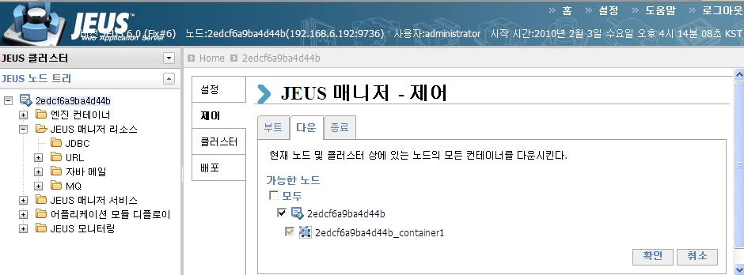
WebAdmin으로 해당 노드를 부팅 시킨 후에, ALTIBASE와의 연동을 위해 JEUS 매니저 리소스 JDBC 메뉴를 클릭하여 새로운 데이터 소스를 생성한다.
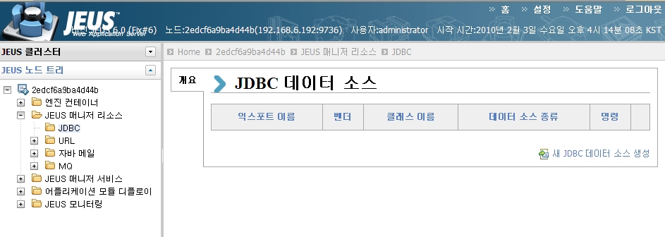
DBMS 벤더를 “Others”로 선택하고, 데이터 소스를 “BlackboxConnectionPoolDataSource”로 선택한 후에 다음 단계로 넘어간다.
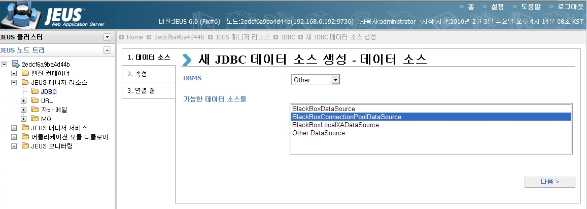
새 JDBC 데이터 소스 생성을 할 때, 각각의 속성 값을 설정해주면 된다. 기본적으로 DBMS 벤더 명과 데이터 소스를 선택하면 다음과 같이 “Vender”, “Data Source Class Name”, “Data Source Type”, “Export Name” 이 설정되어 있다. 해당 속성 값의 변경이 필요한 경우만 수정하여 사용하고 그 외에는 그냥 사용하면 된다.
“Database Name”, “Port Name”, “Server Name” 속성 값은 설정하지 말고, 밑에 나오는 “Property” 항목에 설정하고 다음 단계로 넘어간다. (AltibaseConnectionPoolDataSource나 XADataSource로 선택하여 구성할 시에는 “Property”항목이 아닌 “Database Name”, “Port Name”, “Server Name”에 값을 설정해주면 된다.)
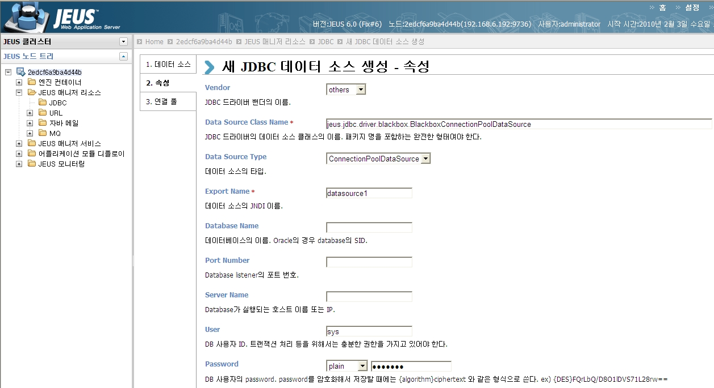
“Property” 속성 값을 다음과 같이 설정해주면 된다.
DriverClassName=Altibase.jdbc.driver.AltibaseDriver URL= jdbc:Altibase://server_ip:server_port/dbname USER=sys PASSWORD=manager
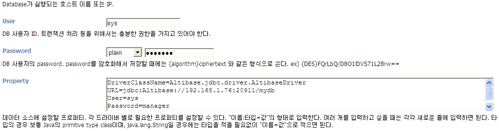
“Property” 항목에 아래의 값을 설정해주지 않거나, “Database Name”, “Port Name”, “Server Name”의 값들 중 하나의 값이라도 설정이 되면 에러가 발생한다.
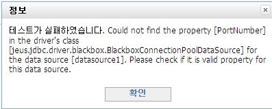
커넥션 풀의 Min/Max 값을 설정해주면 기본적인 설정이 끝나게 된다.
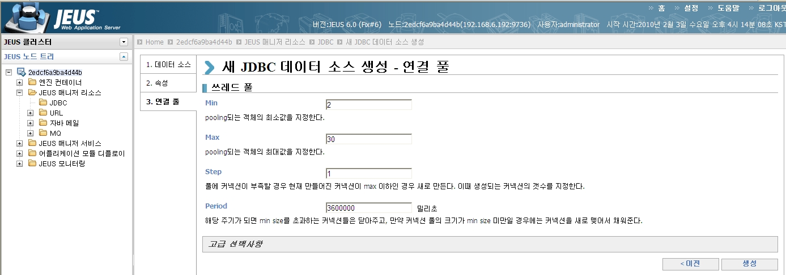
생성이 끝이 난 뒤 테스트 및 바인드를 할 수 있으며 바인드를 해 줘야 해당 설정이 반영이 된다.
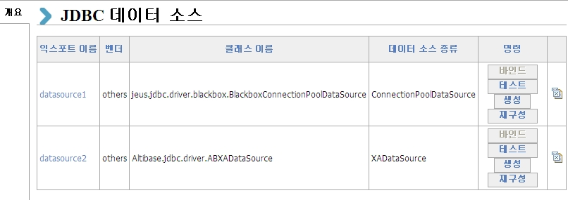
2. AltibaseConnectionPoolDataSource 방법으로 설정
- JEUSMain.xml 파일을 직접 수정하여 설정
파일 편집기를 이용하여 JEUSMain.xml 파일을 열고, <resource> ~ </resource>의 내용을 추가하여 준다.
<jeus-system>
…
<resource>
<data-source>
<database>
<vendor>others</vendor>
<export-name>Datasource1</export-name>
<data-source-class-name>Altibase.jdbc.driver.AltibaseConnectionPoolDataSource</data-source-class-name>
<data-source-type>ConnectionPoolDataSource</data-source-type>
<database-name>mydb</database-name>
<port-number>20300</port-number>
<server-name>127.0.0.1</server-name>
<user>sys</user>
<password>manager</password>
<auto-commit>true</auto-commit>
<property>
<name>Encoding</name>
<type>java.lang.String</type>
<value>KSC5601</value>
</property>
<property>
<name>maxPoolSize</name>
<type>java.lang.Integer</type>
<value>30</value>
</property>
<connection-pool>
<pooling>
<min>2</min>
<max>30</max>
<step>1</step>
<period>3600000</period>
</pooling>
</connection-pool>
</database>
</data-source>
</resource>
…
</jeus-system>
- WebAdmin을 사용하여 설정
JEUS 에서 제공하는 WebAdmin을 통해서 JEUS의 구동, 종료 및 데이터 소스 설정이 가능하다. WebAdmin을 통해서 설정한 속성 값들은 JEUSMain.xml에 저장이 된다. 속성 값의 설정 이전과 이후의 JEUSMain.xml 파일을 비교해보면 <resource> ~ </resource> 사이에 ALTIBASE의 속성 값이 수정되어 있는 것을 확인할 수 있다.
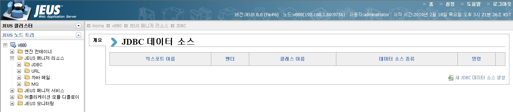
새로운 JDBC데이터 소스를 생성하기 위해서 “새 JDBC 데이터 소스 생성”을 클릭한다.
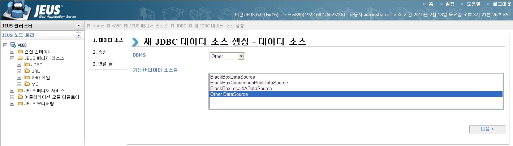
DBMS를 “Other”로 선택한 후에 “Other DataSource”를 선택한다.
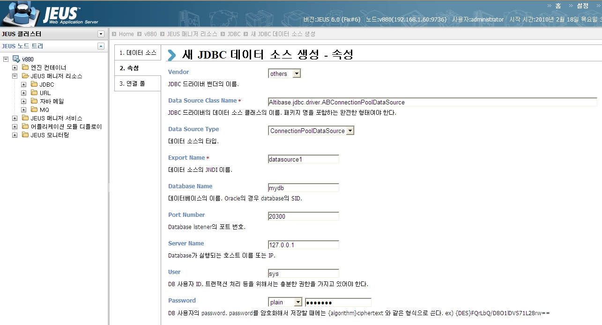
“Data Source Class Name” ~ “Password” 항목들을 설정해준다. “Data Source Class Name”를 설정할 때는 AltibaseConnectionPoolDataSource로 입력하면 안되고, JDBC 드라이버의 데이터 소스 클래스의 이름. 패키지 명을 포함하는 완전한 형태로 입력해야 한다(Altibase.jdbc.dirver.AltibaseConnectionPoolDataSource)
연결풀 설정 및 바인드, 테스트는 BlackboxConnectionPoolDataSource의 설정을 참고하면 된다.
데이터 소스 설정 시 유의 사항
1. AltibaseConnectionPoolDataSource 사용 시 유의 사항
- Data-Source-Class-Name으로 AltibaseConnectionPoolDataSource를 설정한 경우에는 “Encoding”, “maxPoolSize” 등의 프로퍼티를 지정하여 사용할 수 있지만, BlackboxConnectionPoolDataSource 사용 시에는 해당 프로퍼티를 사용할 수 없다.
알티베이스 버전에 따라서 URL 관련 메소드명이 변경되었다. 따라서 버전에 맞는 프라퍼티명을 사용해야 한다.
2. Deadlock 발생
- AltibaseConnectionPoolDataSource 사용시 initialPoolSize를 사용하면 lock이 걸리는 문제가 발생하기도 한다. 이 문제는 JEUS에서 사용해야 할 Pool 의 값들을 ALTIBASE JDBC 드라이버에서 사용하면서 발생하는 문제로 해결하기 위해서는 initialPoolSize 값을 설정하지 않고 MaxPoolSize 값만 설정해서 사용하면 된다.
<property>
<name>encoding</name>
<type>java.lang.String</type>
<value>KSC5601</value>
</property>
<property>
<name>maxPoolSize</name>
<type>java.lang.Integer</type>
<value>10</value>
</property>
체크 쿼리
어플리케이션이 JDBC 커넥션 요청을 했을 때, 특정 SELECT 쿼리를 보내서 커넥션의 상태를 점검하는 기능이다. JDBC 커넥션의 내부적인 에러로 인한 끊김, 방화벽에 의한 소켓 끊김 현상 등을 체크할 때 유용하다. 점검이 실패하면 물리적 커넥션을 새로 만들어서 그에 대한 핸들을 어플리케이션으로 리턴해 준다.
체크 쿼리 기능은 크게 두 가지로 설정할 수 있다. 첫째로 단순히 설정상의 <check-query> 태그에 쿼리문을 넣는 방법이 있고, <check-query-class> 태그를 이용하여 기능을 확장할 수도 있다.
JEUSMain.xml 파일의 <database> ~ </database> 사이에 직접 추가해도 되며, WebAdmin을 사용하는 경우에는 Datasource를 생성하거나 수정 시에 연결풀 고급 선택사항을 클릭한 후에 해당 값을 설정하면 된다.
1. Check-query 설정
체크 쿼리를 위한 쿼리문은 DB에 업데이트를 가하는 명령이 아닌 단순히 쿼리만을 위한 명령어를 넣어야 한다.
<check-query>select 1 from dual</check-query>
2. Check-query-timeout 설정(msec)
check-query 를 수행했을 때 DB 서버의 응답이 없는 경우 무한정 대기하는 상황이 발생할 수도 있다. 이런 경우를 피하기 위해서 check-query-timeout 을 설정할 수 있는데, 설정값은 msec 이며, 1000msec 보다 적을 경우에는 0으로 설정 된다.
< check-query-timeout>20000</check-query-timeout>
3. Non-validation-interval 설정(msec)
check-query의 잦은 사용으로 오버헤드가 발생하게 된다면 Non-validation-interval을 설정하여 해결할 수 있다.
check-query를 수행할 때의 시각과 가장 마지막에 커넥션을 사용한 시각의 차이가 Non-validation-interval의 설정값 사이에 있다면 check-query를 수행하지 않도록 한다.
<non-validation-interval>10000</non-validation-interval>
4. check-query 에 대한 destroy 정책 설정
사용자는 check-query가 실패했을 경우 해당 커넥션 풀에 있는 나머지 커넥션들에 대한 destroy 정책을 다음과 같이 결정할 수 있다.
- FailedConnectionOnly: check-query가 실패한 커넥션만 버린다. 기본 설정값.
- AllConnections: 나머지 커넥션들도 모두 버린다.
<destroy-policy-on-check-query>AllConnections</destroy-policy-on-check-query>
커넥션 풀 모니터링
커넥션 풀을 모니터링 하는 방법은 jeusadmin을 이용하는 방법과 WebAdmin을 이용하는 방법이 있다. 이번 절에서는 jeusadmin을 이용하여 커넥션 풀을 모니터링 하는 방법에 대해서 설명한다.
jeusadmin에서는 엔진 컨테이너에 구성된 JDBC 커넥션 풀을 모니터링 하기 위해서 ‘dsinfo’라는 명령어를 사용한다. 컨테이너에 구성된 모든 커넥션 풀을 모니터링 하기 위해서는 컨테이너 명을 명시해주고, 하나의 커넥션 풀을 모니터링 하기 위해서는 컨테이너에 생성한 데이터 소스 명(Export Name)을 명시해주면 된다.
Jeusadmin> Dsinfo –con 컨테이너 명 데이터 소스 명(export name)
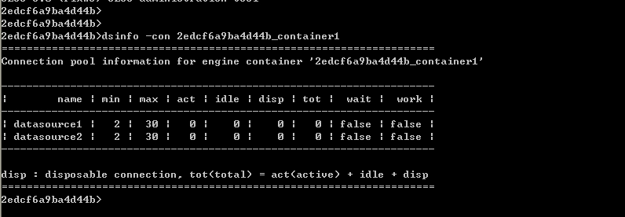
항목 | 설명 |
|---|---|
Name | DB풀의 export name |
Min | 풀안에서 유지되는 커넥션의 최소 크기 |
Max | 풀안에서 유지되는 커넥션의 최대 크기 |
Act | 어플리케이션이 사용하고 있는 커넥션의 수 |
Idle | 현재 풀에 들어있는 커넥션의 수 |
Disp | 한번 사용하고 버리는 커넥션의 총 개수 |
Tot | DB 커넥션의 총 수(active+idle+disposable connection) |
Wait | 풀에 커넥션이 비었을 경우, 쓰레드를 기다리게 할 것인지를 결정한다. “true” 일 경우 기다리게 하고, “false”일 경우 풀과 상관없는 커넥션을 만들어준다. |
work | 만약 DB 풀이 활성화 상태이면 “true”이고 비활성화이거나 아직 생성되지 않은 상태이면 “false”이다. |
또한, ‘dsconinfo’ 명령어를 사용해서 각각의 데이터 소스 별로 현재 커넥션의 상태를 파악하거나 관련 통계를 볼 수 있다.
Jeusadmin> dsconinfo –con 컨테이너 명 데이터 소스 명(export name)
2edcf6a9ba4d44b>dsconinfo -con 2edcf6a9ba4d44b_container1 datasource1 =============================================================== Connection information list for the engine container[2edcf6a9ba4d44b_container1] --------------------------------------------------------------- | id | state | state-time(ms) | use-count | type | --------------------------------------------------------------- | datasource1-1 | idle | 10000 | 0 | pooled | --------------------------------------------------------------- ===============================================================
항목 | 설명 |
|---|---|
Id | 해당 컨테이너의 데이터 소스 내에서 각 connection 별로 붙인 고유한 값 |
State | 커넥션의 상태를 나타내며 active와 idle로 나뉜다. Active일 경우 현재 사용중인 커넥션을 의미한다. |
Usecount | Open, close 짝이 몇 번 일어났는가를 의미한다. |
State time | 커넥션이 현재 상태로 바뀐 후 지속된 시간을 의미한다. |
type | 풀링된 커넥션인지 disposable 커넥션인지 구분한다. |
데이터 소스의 Export Name을 알고 있으면 jeusadmin을 통해서 사용 가능한 풀인지 설정 테스트를 해볼 수 있다.
Jeusadmin> testdsconfig 데이터 소스 명(export name)
2edcf6a9ba4d44b>testdsconfig datasource1 Configuration is valid. You can use it.
{kind=link}
{kind=link}
{kind=link}
{kind=link}
{kind=link}
{kind=link}
{kind=link}
{kind=link}
{kind=link}
{kind=link}
{kind=link}
{kind=link}